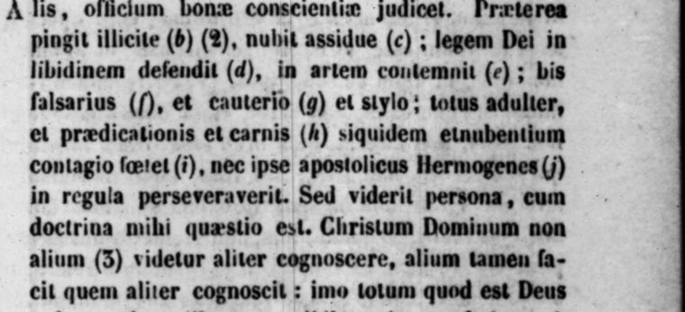

“Bis falsarius, et cauterio et stylo” (chapter 1)
Latin: Migne, PL 2, col. 198 (the sentence begins at the foot of col. 197), scan. Highlighted: the words Lecky quotes.

… [he] counts it the duty of a good conscience to speak ill of everyone. Besides, he paints unlawfully and marries incessantly; he pleads the law of God in defence of his lust, and despises it in defence of his art; twice a forger, with the branding-iron and with the pen; an adulterer through and through, of preaching and of flesh, since he reeks of the contagion of the marrying, and not even the apostolic Hermogenes kept to the rule.
Original Latin
… Hermogenes autem doctrina tam novella est … et maledicere singulis, officium bonæ conscientiæ judicet. Præterea pingit illicite, nubit assidue; legem Dei in libidinem defendit, in artem contemnit; bis falsarius, et cauterio et stylo; totus adulter, et prædicationis et carnis, siquidem et nubentium contagio fœtet, nec ipse apostolicus Hermogenes in regula perseveraverit.
From the commentary below the text, same page (abridged):
(b) He paints unlawfully. Hermogenes was a painter. He painted unlawfully because, after taking the name of Christian, he still painted images of the gods … (c) He marries incessantly. Changing wives repeatedly, for he favoured polygamy. (e) Despises it in defence of his art. That is, he despises the same law by his art, painting images, which the law forbade: Thou shalt not make an idol. (f) Twice a forger, with branding-iron and pen. A forger with his painter’s iron … a forger too, having corrupted the Scriptures with a heretical pen.
Original Latin
(b) Pingit illicite. Hermogenes erat pictor. Pingebat autem illicite, quia post susceptum christiani nomen, nihilominus pingebat simulacra deorum … (c) Nubit assidue. Mutatis subinde conjugiis, etenim polygamiæ favebat. (e) In artem contemnit. Eamdem scilicet legem arte sua contemnit, pingens simulacra, quod lex vetabat, Non facies idolum. (f) Bis falsarius, cauterio et stylo. Falsarius, cauterio suo pictorio … Falsarius etiam, scripturis stylo hæretico depravatis.
Backlinks
Every place in Rationalism in Europe that links to this page (generated automatically when the site is built).
- Chapter III: note 48